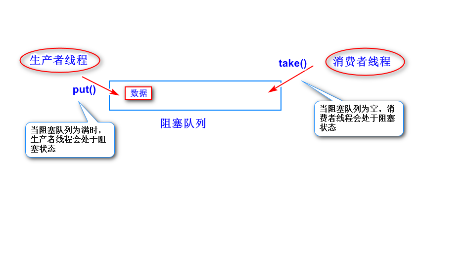
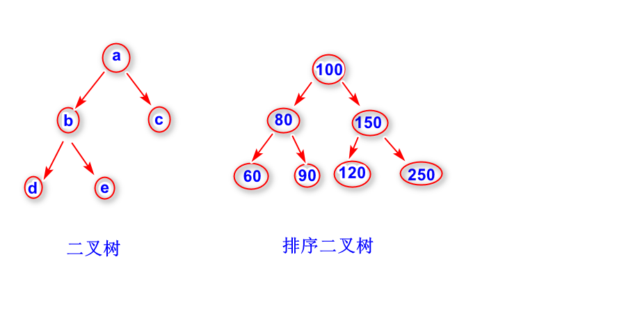

生产者负责产生数据。
消费者负责消费数据。
用来解决生产者生产数据与消费者消费数据
不同步的问题。
生产者产生数据之后，将这些数据存放到阻塞
队列里面，消息者从阻塞队列当中取出数据。
阻塞队列可以在多线程环境下使用，当阻塞队列满时，
生产者线程会阻塞（即暂时挂起)。当阻塞队列为空时，
消费者线程会阻塞。
阻塞队列一般都解决了线程安全问题。

a.订单处理
订单信息先写入到阻塞队列，然后消息者
线程从阻塞队列中取出数据，写到数据库。
b.应用服务器设计(用于任务的分派)
c.日志
可以让生产者线程将日志信息先写入阻塞
队列，然后让消息者线程从阻塞队列当中取
出日志信息，然后写入数据库。

BlockingQueue接口
注：该接口继承Queue接口。
LinkedBlockingQueue类
注：底层实现是一个链表，每添加一个消息(数据),
就需要创建一个新的结点，如果并发量很大，
可能会影响系统GC。
除此之外，LinkedBlockQueue的put方法和
take方法用的是不同的锁，并发性能比较好。
ArrayBlockingQueue类
注：底层实现是一个数组。
ArrayBlockingQueue的take方法和put方法
用的是同一个锁，并发性能差一些。
Producer线程每隔5秒向阻塞队列当中添加一个
随机数。Consumer线程每隔2秒从阻塞队列当中
取出随机数然后输出。
Producer类(Producer线程类)
Consumer类(Consumer线程类)
Test类(启动Producer线程和Consumer线程)
任意一个节点，最多只有两棵子树的树结构。
注：
这两棵子树一般称之为左子树和右子树。
任意一个节点，其左子树上的节点值比该节点的
值小，其右子树上的节点值比该节点的值要大。
左右子树也是一个排序二叉树。
注：
排序二叉树不允许出现重复元素。
